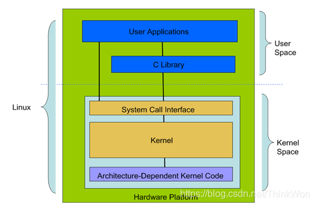

linux概述
linux概述
Linux的基本组件
就像任何其他典型的操作系统一样，Linux拥有所有这些组件：内核，shell和GUI，系统实用程序和应用程序。Linux比其他操作系统更具优势的是每个方面都附带其他功能，所有代码都可以免费下载。
linux内核
Linux 系统的核心是内核。内核控制着计算机系统上的所有硬件和软件，在必要时分配硬件，并根据需要执行软件。
- 系统内存管理
- 应用程序管理
- 硬件设备管理
- 文件系统管理
Linux 的体系结构
从大的方面讲，Linux 体系结构可以分为两块：

- 用户空间(User Space) ：用户空间又包括用户的应用程序(User Applications)、C 库(C Library) 。
- 内核空间(Kernel Space) ：内核空间又包括系统调用接口(System Call Interface)、内核(Kernel)、平台架构相关的代码(Architecture-Dependent Kernel Code) 。
为什么 Linux 体系结构要分为用户空间和内核空间的原因？
- 1、现代 CPU 实现了不同的工作模式，不同模式下 CPU 可以执行的指令和访问的寄存器不同。
- 2、Linux 从 CPU 的角度出发，为了保护内核的安全，把系统分成了两部分。
用户空间和内核空间是程序执行的两种不同的状态，我们可以通过两种方式完成用户空间到内核空间的转移：1）系统调用；2）硬件中断。
BASH和DOS之间的基本区别是什么？
BASH和DOS控制台之间的主要区别在于3个方面：
- BASH命令区分大小写，而DOS命令则不区分;
- 在BASH下，/ character是目录分隔符，\作为转义字符。在DOS下，/用作命令参数分隔符，\是目录分隔符
- DOS遵循命名文件中的约定，即8个字符的文件名后跟一个点，扩展名为3个字符。BASH没有遵循这样的惯例。
BASH是Bourne Again SHell的缩写。它由Steve Bourne编写，作为原始Bourne Shell（由/ bin / sh表示）的替代品。它结合了原始版本的Bourne Shell的所有功能，以及其他功能，使其更容易使用。从那以后，它已被改编为运行Linux的大多数系统的默认shell。
DOS是磁盘操作系统（Disk Operating System）的缩写。
Linux 使用的进程间通信方式？
- 管道(pipe)、流管道(s_pipe)、有名管道(FIFO)
- 信号(signal)
- 消息队列
- 共享内存
- 信号量
- 套接字(socket)
Linux 有哪些系统日志文件？
比较重要的是 /var/log/messages 日志文件。
该日志文件是许多进程日志文件的汇总，从该文件可以看出任何入侵企图或成功的入侵。
另外，如果系统里有 ELK 日志集中收集，它也会被收集进去。
什么是交换空间？
交换空间是Linux使用的一定空间，用于临时保存一些并发运行的程序。当RAM没有足够的内存来容纳正在执行的所有程序时，就会发生这种情况。
什么是root帐户
root帐户就像一个系统管理员帐户，允许你完全控制系统。你可以在此处创建和维护用户帐户，为每个帐户分配不同的权限。每次安装Linux时都是默认帐户。
什么是LILO？
LILO是Linux的引导加载程序。它主要用于将Linux操作系统加载到主内存中，以便它可以开始运行。
什么是CLI？
命令行界面（英语：command-line interface，缩写]：CLI）是在图形用户界面得到普及之前使用最为广泛的用户界面，它通常不支持鼠标，用户通过键盘输入指令，计算机接收到指令后，予以执行。也有人称之为字符用户界面（CUI）。
通常认为，命令行界面（CLI）没有图形用户界面（GUI）那么方便用户操作。因为，命令行界面的软件通常需要用户记忆操作的命令，但是，由于其本身的特点，命令行界面要较图形用户界面节约计算机系统的资源。在熟记命令的前提下，使用命令行界面往往要较使用图形用户界面的操作速度要快。所以，图形用户界面的操作系统中，都保留着可选的命令行界面。
什么是GUI？
图形用户界面（Graphical User Interface，简称 GUI，又称图形用户接口）是指采用图形方式显示的计算机操作用户界面。
图形用户界面是一种人与计算机通信的界面显示格式，允许用户使用鼠标等输入设备操纵屏幕上的图标或菜单选项，以选择命令、调用文件、启动程序或执行其它一些日常任务。与通过键盘输入文本或字符命令来完成例行任务的字符界面相比，图形用户界面有许多优点。
参考
本博客所有文章除特别声明外，均采用 CC BY-SA 4.0 协议 ，转载请注明出处！